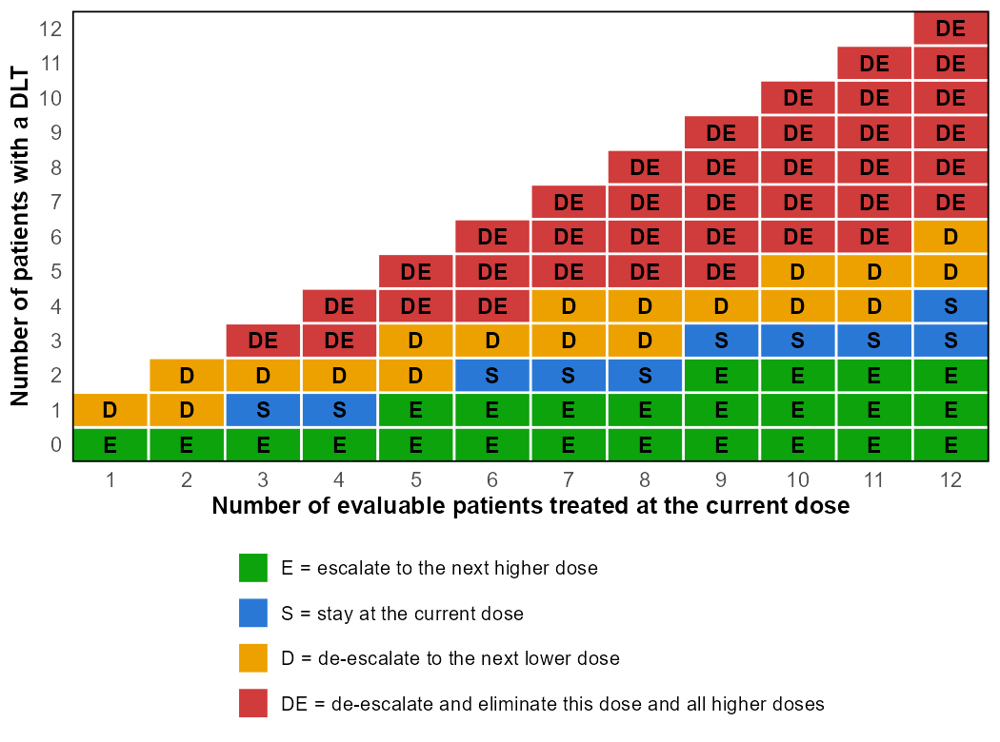
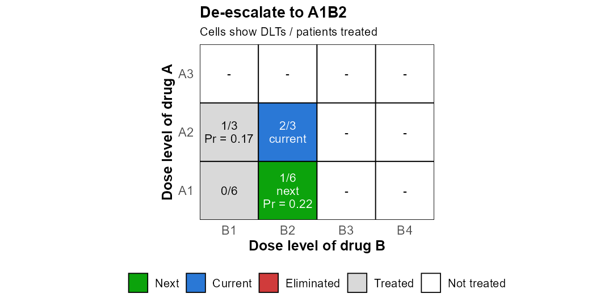
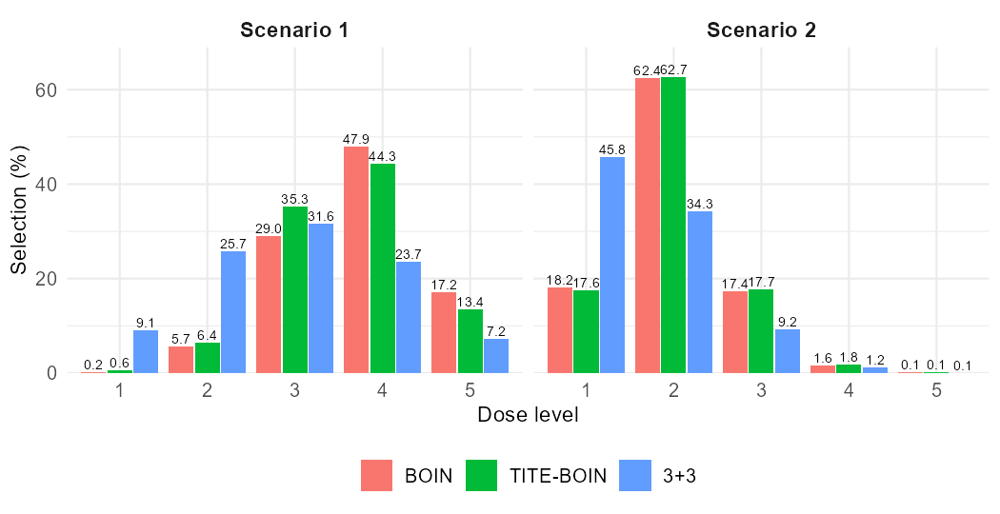
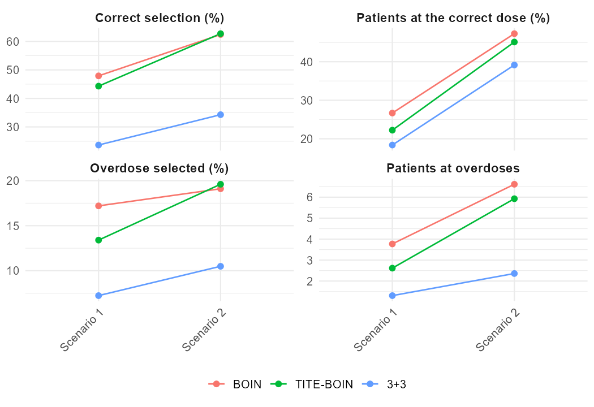

Designs at a glance
Every simulation function has an engine that returns the trials themselves, named after the design: boin_simulate(), tite_boin_simulate(), comb_boin_simulate(), boin_et_simulate() and so on. keep_trials = TRUE keeps them in the result of a sim_*() function.
Decision rules of the BOIN design
\(\lambda_e = \dfrac{\log\{(1-\phi_1)/(1-\phi)\}}{\log\{\phi(1-\phi_1)/[\phi_1(1-\phi)]\}}, \quad \lambda_d = \dfrac{\log\{(1-\phi)/(1-\phi_2)\}}{\log\{\phi_2(1-\phi)/[\phi(1-\phi_2)]\}}\)
\(\phi\) is target; \(\phi_1\) and \(\phi_2\) are p_saf and p_tox, \(0.6\phi\) and \(1.4\phi\) by default (boin_lambda()). With \(\hat p\) the observed DLT rate at the current dose:
A dose is eliminated when \(\Pr(p > \phi \mid \text{data}) > 0.95\) (cutoff_eli) under a uniform prior, from three patients on. At the end, the MTD is the dose whose isotonic estimate of the DLT rate is closest to \(\phi\).
library(simFastBOIN)
boin_boundary(target = 0.30, max_n = 18)
decisions <- boin_decision_table(target = 0.30, max_n = 12)
print(decisions, cohort_size = 3)
plot(decisions) # needs ggplot2
plot(decisions): the decision for every number of patients treated (columns) and of DLTs (rows).Simulate one scenario
oc <- sim_boin(target = 0.30, p_true = c(0.05, 0.15, 0.30, 0.45, 0.60),
n_cohort = 10, cohort_size = 3, n_trials = 10000,
seed = 123)
oc
oc$sel_percent # trials selecting each dose as the MTD (%)
oc$n_pts_dose # average number of patients at each dose
oc$percent_no_mtd # trials ending without an MTD (%)The result prints the true DLT rates, the selection and the average numbers of patients and DLTs at each dose, and the use of the doses above the target. With keep_trials = TRUE it also holds the trials. A seed gives the same trials as BOIN::get.oc() with the same arguments; set n_earlystop explicitly when comparing, since its default is 18 here and 100 in 'BOIN'.
sim_boin_multi(
target = 0.30,
scenarios = list("MTD at dose 2" = c(0.15, 0.30, 0.45, 0.60, 0.75),
"MTD at dose 4" = c(0.02, 0.06, 0.15, 0.30, 0.50)),
n_cohort = 10, cohort_size = 3, n_trials = 10000, seed = 123
)Common arguments
target | Target DLT rate; target_resp the response rate of the designs for the OBD, a target for BOIN-ET and the lowest acceptable rate for BOIN12 and BF-BOIN-ET |
p_true | True DLT rates: a vector of the doses, or a matrix for two drugs, with the levels of drug A in the rows; p_resp the true response rates |
n_cohort, cohort_size | Number of cohorts and patients per cohort |
n_trials, seed | Number of simulated trials (10,000) and the seed (123) |
start_dose | Dose of the first cohort (1, or c(1, 1) for two drugs) |
n_earlystop | Stop once this many patients are at the current dose and the design would stay |
cutoff_eli | Posterior probability that eliminates a dose (0.95) |
extrasafe, offset | Stricter stopping rule at the lowest dose |
titration | One patient per dose until the first DLT; titration_doses ends it at a dose |
window, accrual_rate | Assessment window and patients per unit of time, for the designs with time |
keep_trials | Keep the simulated trials in the result |
boin_compatible, boinet_compatible | The rules of 'BOIN' (waterfall) and of 'boinet' (BOIN-ET, TITE-BOIN-ET, gBOIN-ET and TITE-gBOIN-ET) where they differ from those of the package |
The arguments of a design are those of its help page; the _multi() versions take scenarios in place of the true rates.
Prior information and toxicity grades
iBOIN moves the boundaries of every dose by a skeleton, a prior DLT rate for every dose, worth prior_ess patients.
skeleton <- c(0.10, 0.19, 0.30, 0.42, 0.54)
iboin_boundary(target = 0.30, skeleton = skeleton, prior_ess = 3,
max_n = 9)
sim_iboin(target = 0.30, p_true = c(0.08, 0.15, 0.31, 0.45, 0.55),
skeleton = skeleton, prior_ess = 3, n_cohort = 10,
cohort_size = 3, n_earlystop = 100, n_trials = 2000, seed = 123)robust = TRUE gives the robust prior; select_with_prior = FALSE selects the MTD from the data alone.
gBOIN decides from the toxicity grades, by the normalized score of each patient; the probabilities of the grades are a matrix with one row per grade and one column per dose.
p_grade <- rbind(
"Grade 0-1" = c(0.83, 0.75, 0.62, 0.51, 0.34, 0.19),
"Grade 2" = c(0.12, 0.15, 0.18, 0.19, 0.16, 0.11),
"Grade 3" = c(0.04, 0.07, 0.11, 0.14, 0.15, 0.11),
"Grade 4" = c(0.01, 0.03, 0.09, 0.16, 0.35, 0.59)
)
sim_gboin(target = 0.47 / 1.5, p_grade = p_grade,
score = c(0, 0.5, 1, 1.5), n_cohort = 10, cohort_size = 3,
n_earlystop = 100, n_trials = 2000, seed = 123)The target is on the scale of the score divided by its maximum: a target of 0.47 for scores up to 1.5 is 0.47 / 1.5. elim_rule = "count" eliminates doses with the rule of 'UnifiedDoseFinding'.
Late-onset toxicity and backfilling
TITE-BOIN treats new patients while earlier ones are still followed. The decisions also depend on the follow-up of the pending patients, by the single mean imputation (method = "imputation") or the effective sample size (method = "ess").
tite <- tite_boin_decision_table(target = 0.30, max_n = 15)
print(tite, cohort_size = 3)
sim_tite_boin(target = 0.30, p_true = c(0.05, 0.15, 0.30, 0.45, 0.60),
n_cohort = 10, cohort_size = 3,
window = 3, # a three month assessment window
accrual_rate = 2, # two patients a month
n_trials = 10000, seed = 123)BF-BOIN backfills the patients who arrive while the escalation waits to lower doses that are safe and have shown a response; BE-BOIN does so around the time-to-event design, with the same arguments in sim_be_boin().
sim_bf_boin(target = 0.25, p_true = c(0.04, 0.12, 0.25, 0.43, 0.63),
p_resp = c(0.10, 0.20, 0.30, 0.45, 0.58),
n_cohort = 10, cohort_size = 3, window = 1,
accrual_rate = 3, n_earlystop = 9, n_trials = 10000,
seed = 123)The results of the designs with time also give the duration of the trials.
Combinations of two drugs
The true DLT rates are a matrix, with the levels of drug A in the rows and those of drug B in the columns.
p_ab <- matrix(c(0.02, 0.04, 0.08, 0.14,
0.08, 0.25, 0.42, 0.48,
0.25, 0.45, 0.50, 0.60), nrow = 3, byrow = TRUE)
sim_comb_boin(target = 0.25, p_true = p_ab, n_cohort = 16,
cohort_size = 3, n_trials = 2000, seed = 123)
# The combination for the next cohort of a trial in progress
n_pts <- matrix(c(6, 6, 0, 0,
3, 3, 0, 0,
0, 0, 0, 0), nrow = 3, byrow = TRUE)
n_tox <- matrix(c(0, 1, 0, 0,
1, 2, 0, 0,
0, 0, 0, 0), nrow = 3, byrow = TRUE)
nxt <- comb_boin_next(target = 0.25, n_pts = n_pts, n_tox = n_tox,
current = c(2, 2))
nxt
plot(nxt)
plot(nxt): DLTs and patients at every combination, the current one, the next one and those eliminated.The waterfall design finds the MTD contour, one combination at every level of drug A.
p_wf <- matrix(c(0.01, 0.04, 0.11, 0.15, 0.30,
0.03, 0.05, 0.13, 0.30, 0.50,
0.07, 0.10, 0.30, 0.48, 0.54), nrow = 3, byrow = TRUE)
sim_waterfall(target = 0.30, p_true = p_wf, cohort_size = 3,
n_trials = 2000, seed = 123)boin_compatible = TRUE follows BOIN::get.oc.comb(mtd.contour = TRUE) trial by trial. Comb-BOIN12 and BOIN-ETC look for the optimal dose combination with p_resp as a matrix.
Optimal biological dose
The designs for the OBD also take the true response rates, p_resp, and select the dose that balances the response against the toxicity.
# BOIN-ET: Scenario 1 of Takeda et al. (2018)
sim_boin_et(target = 0.30, target_resp = 0.60,
p_true = c(0.05, 0.15, 0.25, 0.30, 0.35, 0.40),
p_resp = c(0.05, 0.35, 0.55, 0.65, 0.75, 0.70),
n_cohort = 12, cohort_size = 3, n_trials = 2000, seed = 123)
# BOIN12: Scenario 1 of Lin et al. (2020)
sim_boin12(target = 0.35, target_resp = 0.25,
p_true = c(0.05, 0.12, 0.27, 0.35, 0.50),
p_resp = c(0.20, 0.35, 0.36, 0.37, 0.38),
n_cohort = 12, cohort_size = 3, n_trials = 2000, seed = 123)
# U-BOIN: the utility of the joint outcome of a patient
sim_uboin(tox_upper = 0.30, resp_lower = 0.20,
p_true = c(0.02, 0.15, 0.30, 0.45, 0.60),
p_resp = c(0.20, 0.65, 0.65, 0.65, 0.65),
n_cohort = 18, cohort_size = 3, resp_assoc = 0.2,
n_trials = 2000, seed = 123)est_method, obd_method | Estimates of the rates and selection of the OBD of BOIN-ET (the rules of 'boinet') |
psi00, psi11 | Utility of no DLT and no response, and of a DLT with a response (40 and 60) |
utility | Utilities of the four joint outcomes of U-BOIN |
p_grade, p_resp_grade | Probabilities of the grades of toxicity and efficacy of gBOIN-ET |
Compare designs and scenarios
oc_scenarios() gives the true MTD (and OBD) of every scenario, oc_results() sets the results of several designs side by side and oc_compare() judges them against the true doses. Nothing is simulated again.
scenarios <- list("Scenario 1" = c(0.05, 0.10, 0.20, 0.30, 0.45),
"Scenario 2" = c(0.10, 0.30, 0.45, 0.55, 0.65))
truth <- oc_scenarios(scenarios, target = 0.30)
design <- list(target = 0.30, scenarios = scenarios, n_cohort = 10,
cohort_size = 3, n_trials = 1000, seed = 123)
boin <- do.call(sim_boin_multi, design)
tite <- do.call(sim_tite_boin_multi,
c(design, list(window = 1, accrual_rate = 2)))
three <- lapply(scenarios, function(p) oc_3p3(p_true = p))
results <- oc_results(BOIN = boin, "TITE-BOIN" = tite, "3+3" = three)
plot(results) # selection (%) by dose
comparison <- oc_compare(BOIN = boin, "TITE-BOIN" = tite, "3+3" = three,
truth = truth)
comparison
plot(comparison)
plot(results): the selection of every dose by design and scenario; metric = "n_pts" draws the patients.
plot(comparison): correct selection, patients at the true MTD, overdose selection and patients at overdoses.The designs must be all for one drug or all for two drugs, with the same doses. A design is given as the result of a sim_*() function, of its _multi() version, or as a list of results named by the scenarios. The waterfall design has its own summaries of the contour.
The 3+3 design
p_true <- c(0.05, 0.15, 0.25, 0.45, 0.60)
oc_3p3(p_true = p_true) # in closed form
oc_3p3(p_true = p_true, mtd_rule = "expand")
sim_3p3(p_true = p_true, n_trials = 10000) # the same by simulation
decision_table_3p3()mtd_rule = "previous" (the default) names the dose below the one declared too toxic; "expand" the highest dose with at most one DLT out of six patients.
Conduct a trial
The next dose is read off the decision table of the design (boin_decision_table(), tite_boin_decision_table(), boin_et_decision_table(), boin12_decision_table(), uboin_utility_table()), or given by comb_boin_next() for two drugs. At the end, the selection functions take the numbers of patients and DLTs of every dose, one row per trial.
n_pts <- matrix(c(3, 6, 9, 3), nrow = 1)
n_tox <- matrix(c(0, 1, 3, 2), nrow = 1)
boin_select_mtd(n_pts, n_tox, target = 0.30)
boin_isotonic(n_pts, n_tox) # isotonic estimates of the DLT ratesHow the package is checked
inst/reproduce/: scripts that reproduce the tables and figures of the articles of the designs.inst/validation/: scripts that compare the package with 'BOIN', 'boinet', 'bfboinet', 'UnifiedDoseFinding', 'escalation' and the code of the authors; where the rules and the random numbers are the same, the results are equal.- Every compared value is PASS, EXPLAINED (a reason was found, listed in
inst/validation/explained.csv), FAIL or INFO: How the package is checked. inst/benchmark/benchmark.Rtimes the package against the reference packages: Computation time.
Install and documentation
install.packages("simFastBOIN")
# The development version
pak::pak("gosukehommaEX/simFastBOIN")
vignette("simFastBOIN-introduction", package = "simFastBOIN")- Articles: Introduction, late-onset toxicity, backfilling, drug combinations, BOIN-ET, BOIN12 and U-BOIN, comparing designs and scenarios.
- Reference of all functions and changelog.
- Source and issues: github.com/gosukehommaEX/simFastBOIN.
This sheet describes version 2.3.0. iBOIN, gBOIN, gBOIN-ET, TITE-gBOIN-ET, the waterfall design and U-BOIN are new in 2.3.0.